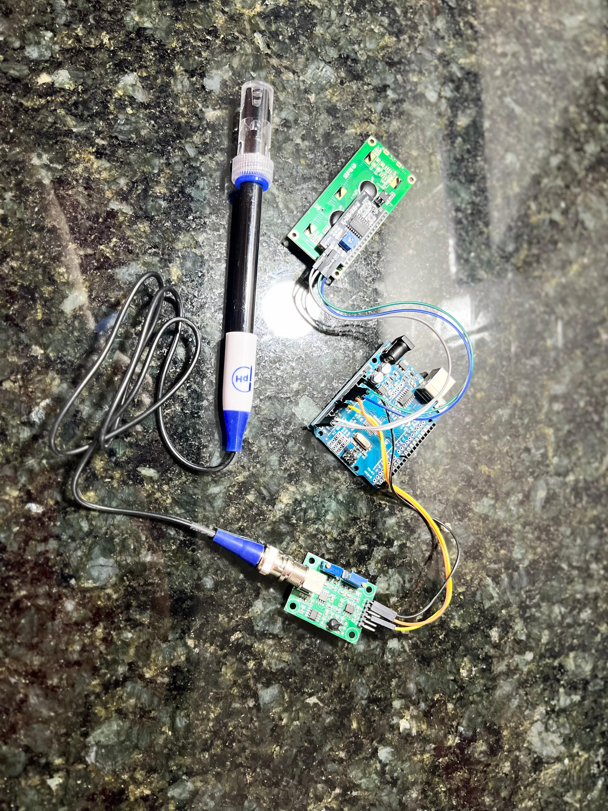
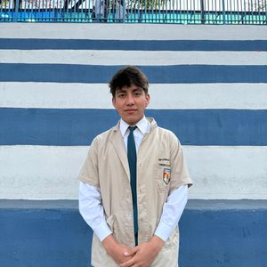
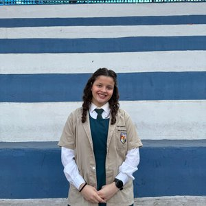
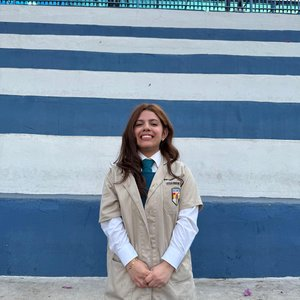

PH Control
"Desarrollo e Implementación de un Medidor de pH de Agua con Arduino” para Expotec 2025.
Fundamentación
El proyecto PH Control nace de la necesidad de contar con herramientas accesibles y precisas para el monitoreo de la calidad del agua. La medición del pH es fundamental en una gran variedad de campos, desde la acuicultura y la agricultura hidropónica hasta procesos industriales y laboratorios educativos.
Como propuesta para la Expotec, este proyecto integra conocimientos de electrónica con Arduino, y desarrollo web moderno. Fomenta el trabajo colaborativo y la aplicación práctica de los contenidos aprendidos, creando una solución funcional y de gran utilidad.

Objetivos
Objetivo General
“Desarrollar un sistema electrónico basado en Arduino para medir el pH del agua de forma precisa y accesible, con el fin de facilitar el monitoreo de la calidad del agua en contextos educativos, científicos o ambientales.”
Objetivos Específicos
Diseñar el circuito electrónico necesario para la lectura de datos de un sensor de pH utilizando Arduino.
Programar el microcontrolador Arduino para procesar, interpretar y mostrar los valores de pH de manera precisa.
Construir un prototipo funcional que permita medir el pH del agua en tiempo real.
Validar el funcionamiento del sistema mediante pruebas con muestras de agua de diferentes características.
Explora la Escala de pH
Pasa el mouse sobre la escala para descubrir ejemplos de sustancias comunes.
Aplicaciones Prácticas
Acuarios y Piscicultura
Controlar el pH es vital para la salud de los peces y ecosistemas acuáticos.
Agricultura e Hidroponía
El pH del suelo o del agua afecta directamente la absorción de nutrientes de las plantas.
Laboratorios Educativos
Una herramienta accesible para enseñar conceptos de química de forma práctica.
Medición en Tiempo Real
pH 7.00
Esperando datos...
Endpoint: http://localhost:5000/ph
Conexión: inactiva
Integrantes
Thiago Galvan
Líder de Proyecto / Backend

Fernando Algarin
Diseño de Hardware

Miryam Rober
Documentación y Pruebas

Cecilia Riquelme
Diseño Web / Frontend
Contacto
Escríbenos si quieres más información sobre el proyecto o una demo.
Tus datos se envían de forma segura mediante Formspree.